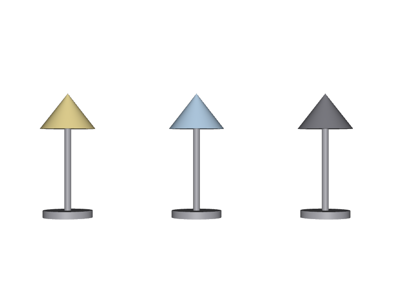

選択肢を用意せず、overで直させる
使う側が内部のPrim名に依存します。中身を変えたときに、使っている全シーンが壊れます。
STEP 70 · PIPELINE
使う側が変えてよい部分を、あらかじめ用意しておきます
今日これだけ
公式情報に基づく説明
使う側はいつでもoverで中身を上書きできます。しかしそれは内部構造に依存する行為で、STEP 50 Encapsulationの境界を越えます。そこで作る側が、変えてよい部分をあらかじめ選択肢として用意します。STEP 41 Variant SetをSTEP 67 Entry Pointに置くのが、その最も一般的な形です。
USDA
def Xform "Lamp" (
kind = "component"
payload = @lamp_contents.usda@</Lamp>
prepend variantSets = "shade"
variants = {
string shade = "warm"
}
)
{
custom string academy:assetName = "Lamp"
custom string academy:version = "1.0"
variantSet "shade" = {
"warm" {
over "Shade"
{
color3f[] primvars:displayColor = [(0.95, 0.8, 0.35)]
}
}
"cool" {
over "Shade"
{
color3f[] primvars:displayColor = [(0.55, 0.75, 0.95)]
}
}
"dark" {
over "Shade"
{
color3f[] primvars:displayColor = [(0.25, 0.25, 0.28)]
}
}
}
}作る側は3つの選択肢を用意し、既定をwarmにしています。各選択肢の中身はover "Shade"で、内部のPrimを指していますが、これを書いているのは作る側です。中身の名前が変わったときに直す責任も作る側にあります。
USDA
def "Lamp_B" (
references = @lamp.usda@
variants = {
string shade = "cool"
}
)
{
double3 xformOp:translate = (0, -1, 0)
uniform token[] xformOpOrder = ["xformOp:translate"]
}使う側が書いたのはshade = "cool"の一行だけです。Shadeという内部のPrim名も、色の値も出てきません。displayColorというProperty名すら知らずに済みます。
結果

lamp.usdaです。違うのは選んだ名前だけです。examples/lesson-51/scene.usda / Apple USD Tools 0.25.2 のusdrecord（Hydra Storm・Metal）/ macOS 26.5.2・Apple M4from pxr import Usd
stage = Usd.Stage.Open("scene.usda")
for name in ("A", "B", "C"):
prim = stage.GetPrimAtPath("/World/Lamp_%s" % name)
shade = stage.GetPrimAtPath("/World/Lamp_%s/Shade" % name)
print(name, prim.GetVariantSet("shade").GetVariantSelection(),
shade.GetAttribute("primvars:displayColor").Get())
# A warm [(0.95, 0.8, 0.35)]
# B cool [(0.55, 0.75, 0.95)]
# C dark [(0.25, 0.25, 0.28)]確かめる
from pxr import Usd
# 中身を一つも開かずに、選べるものを調べる
stage = Usd.Stage.Open("scene.usda", Usd.Stage.LoadNone)
lamp = stage.GetPrimAtPath("/World/Lamp_A")
print(lamp.IsLoaded()) # False
print(lamp.GetVariantSets().GetNames()) # ['shade']
print(lamp.GetVariantSet("shade").GetVariantNames()) # ['cool', 'dark', 'warm']Payloadを開かなくても、「このアセットにはshadeという選択肢があり、3つの値から選べる」ということが読み取れます。つまり選択肢の一覧そのものがSTEP 68 Asset Interfaceの一部です。ツールのUIに選択肢を並べたいときも、中身を読み込まずに作れます。
Diagram
Python
from pxr import Gf, Sdf, Usd, UsdGeom
stage = Usd.Stage.Open("lamp.usda")
lamp = stage.GetDefaultPrim()
vset = lamp.GetVariantSets().AddVariantSet("shade")
for name, color in (("warm", Gf.Vec3f(0.95, 0.8, 0.35)),
("cool", Gf.Vec3f(0.55, 0.75, 0.95)),
("dark", Gf.Vec3f(0.25, 0.25, 0.28))):
vset.AddVariant(name)
vset.SetVariantSelection(name)
with vset.GetVariantEditContext():
shade = stage.OverridePrim(lamp.GetPath().AppendChild("Shade"))
UsdGeom.PrimvarsAPI(shade).CreatePrimvar(
"displayColor", Sdf.ValueTypeNames.Color3fArray,
UsdGeom.Tokens.constant).Set([color])
vset.SetVariantSelection("warm") # 既定を決める
stage.Save()書き方はSTEP 51 Variant Edit Contextとまったく同じです。違うのは置き場所で、中身のファイルではなく入口のファイルに書いている点です。こうすることで、選択肢の一覧が中身を開かずに読めるようになります。
USDA → Python mapping
USDA
prepend variantSets = "shade"↓Python
prim.GetVariantSets().AddVariantSet("shade")USDA
使う側の variants = { string shade = "cool" }↓Python
prim.GetVariantSet("shade").SetVariantSelection("cool")やりたいこと
選べる値を調べる↓Python
prim.GetVariantSet("shade").GetVariantNames()Beginner notes
よくある間違い
使う側が内部のPrim名に依存します。中身を変えたときに、使っている全シーンが壊れます。
選択肢の一覧を読むためにPayloadを開くことになります。入口に置きます。
名前は約束です。変えると、選んでいた側が既定に戻ってしまいます。
使う側が何も指定しなかったときの見た目が定まりません。必ず既定を設定します。
Glossary
Official references
確認日: